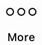

Make a backup of identities, accounts, and addresses#
To make sure that you have a backup of your accounts, identities, and addresses, Concordium strongly recommends that you export the data to a file you can store in a safe location. The backup will ensure that you can recover your accounts, identities, and addresses if your Wallet database becomes damaged or if, for some reason, you can’t access the Wallet.
Warning
You can’t import a file created in the Mobile Wallet into the Desktop Wallet or the other way around because the two wallets handle private keys in different ways. If you try to import a file that has been exported from the Mobile Wallet into the Desktop Wallet, the import will fail, and likewise, if you try to import a file exported from the Desktop Wallet into the Mobile Wallet. For more information, see Deciding between the Desktop Wallet and the Mobile Wallet.
Warning
You are solely responsible for keeping your assets secure. You must never share your private keys, PIN codes, passwords, recovery phrases, Ledgers, or mobile devices with anyone.
To actually access the recovered accounts, you still need the Ledger that was used to set up the accounts, or a new Ledger that’s been restored from the same recovery phrase.
Go to Export/Import.
Select Export.
Create a password that contains at least 6 characters. You’ll need the password to import the file into the Desktop Wallet so keep it safe.
Navigate to the location on your computer where you want to save the file. If you’re on Windows, make sure that All Files is selected in Save as type. Give the file a name and the extension .json, and then click Save. Once the export is complete, we recommend that you store the file in a safe location that is different from where you store the Desktop Wallet database.
Go to Export/Import.
Select Import and navigate to the location on your computer where you saved the file, and then select Open.
Enter the password of the import. If the import is successful, you can see all the imported identities, accounts, and addresses in the right pane.
If, for some reason, you’ve lost one or more of your accounts in the Desktop Wallet, and you’ve also lost the backup file, you can use the Ledger device to recover those accounts.
You only have to perform a recovery if you have lost the backup of your accounts and identities. If you still have the backup file, you can import the accounts back into the Desktop Wallet.
If you’ve lost your Ledger device or the device has stopped working, you can restore the keys in another Ledger device by by restoring it from the recovery phrase used for the original device. To learn more about the recovery phrase of a Ledger device, see Ledger’s documentation: What is a recovery phrase .
How the recovery process works
When you create a new identity in the Desktop Wallet, a number on the Ledger is associated with the identity. This is called the identity index and there can be more identity indices on a Ledger. These indices are used sequentially, so the first identity created from a Ledger uses index 0, the next uses index 1, and so on.
The Ledger stores data about the credentials that belong to an identity. The keys you use to sign account transactions are all attached to credentials. It’s the credentials on an account that determine who’s allowed to sign transactions. To learn more about identities, see Identities and accounts.
Lost identities can’t be recovered because the identity object is not stored on the Ledger. However, you can go through each index on the Ledger where the data to create credentials are stored and use this information to regain access to the accounts related to a given identity.
For each identity index, the recovery process uses the Ledger device to calculate the IDs of the credentials, which also have sequential indices. The wallet then checks on the blockchain whether the credentials have been deployed, and which account each credential is attached to. These accounts are then added to the Desktop Wallet along with the deployed credentials.
If all your identity issuances were successful, you can stop the recovery when you encounter an unused index. However, if one of your identity issuance processes failed, this might have caused an index to be skipped. Therefore, you must determine yourself when the recovery is completed.
The recovery also creates placeholders for the missing identities to indicate that the index has already been used. However, the information used to create new accounts and credentials on a missing identity can’t be recovered because it doesn’t exist on the blockchain. That’s why you can’t create new accounts using these placeholders. Instead, you can request a new identity from an identity provider.
The names of the accounts and the notes on the credentials are also not recoverable because they are only saved locally.
Incomplete backups
If you have imported accounts from a backup file and you know there are accounts missing on one or more identities, you can go through the recovery process to recover the missing accounts.
How to recover accounts
In the Desktop Wallet, go to Settings, and then select Recover existing accounts.
Familiarize yourself with the recovery information, and then select Continue.
Connect the Ledger to the computer if you haven’t done so already, and then select Submit.
In the Desktop Wallet, there’s a message saying Please allow recovering credentials. The Ledger says Recover credentials. In the right pane, you can see the indices that are found, and the accounts, if any, associated with each index.
When you consider the recovery complete, select Stop recovery, I found all my accounts. You then see an overview of all the recovered accounts. If you don’t think the recovery is complete, you can go back and continue the recovery process.
To view the recovered accounts, go to Accounts. A recovered account doesn’t have the name you originally gave it. Instead the name consists of the first eight digits of the account address. Furthermore, because the identities are not recovered, the accounts show the index number that’s associated with the identity and not the identity itself.
To view placeholders for identities, go to Identities. Here you can see placeholders for the missing identities. These placeholders show the index numbers that have been used. You can’t use the placeholders to create new accounts.
Warning
Backup is essential. If you lose your mobile phone or need to restore your mobile phone and you don’t have a backup from the Mobile Wallet, you can’t access your wallet and your CCDs are permanently inaccessible. Concordium does not take any responsibility if you lose access to your accounts. Concordium strongly advise you to complete a backup every time you create an account and store the backup file in a secure place - preferably offline.
Warning
The only way to ensure that your backup includes the keys for all of your accounts is to follow the instructions below. Any backup made in any other way (e.g., backup of mobile phone) will NOT include your account keys and may result in you losing access to your accounts.
Tap Backup in the lower left corner.
Enter your biometrics or app passcode.
Read the information about the export and tap Continue.
Choose a password with a minimum of 6 characters to encrypt your export. Make sure to choose a secure password and keep it safe. Anyone with the password will be able to unlock the export and make transfers from your account. Tap Continue.
Choose an option for sending or saving the export file, such as Mail.
Concordium strongly recommends that you store the backup file in a safe location and not on the phone itself. It’s also vital that you keep the password to the backup file safe. Anyone with access to the file can gain access to your crypto assets. Concordium is not able to recover backup passwords.
Depending on whether you are using an Android phone or an iPhone, the import process differs slightly.
Go to the  page.
Tap Restore Backup.
Use the Android system prompt to browse to your export and select the file.
Enter the password you chose upon making the export.
Enter your biometrics or app passcode.
Review your import and tap Ok, thanks.
Find the file you want to import on your iPhone.
Choose the iOS “Share” option. Choose Concordium Mobile Wallet as the app to open the file.
Enter the password you chose upon making the export.
Enter your biometrics or app passcode.
Review your import and tap Ok, thanks.
 Copyright 2021 - 2022, Concordium Software ApS
Copyright 2021 - 2022, Concordium Software ApS